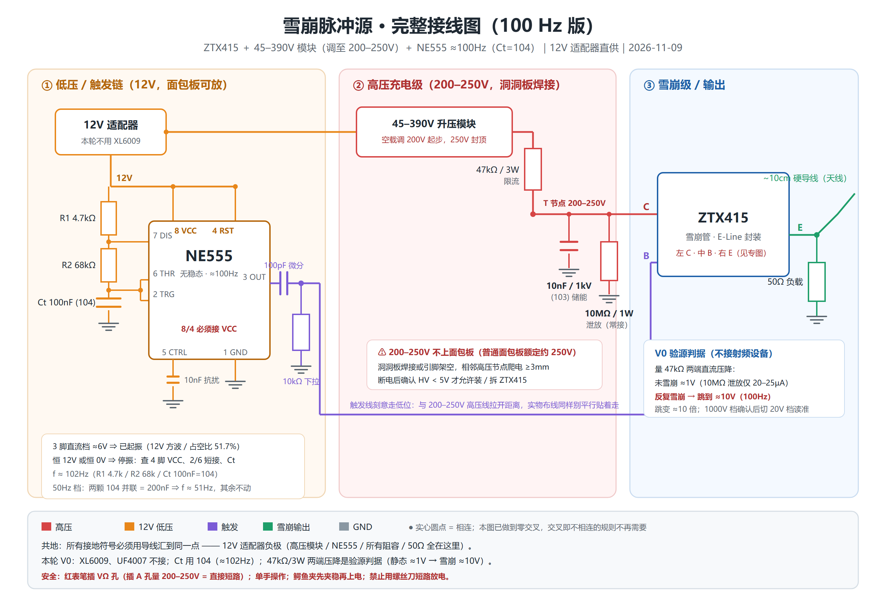
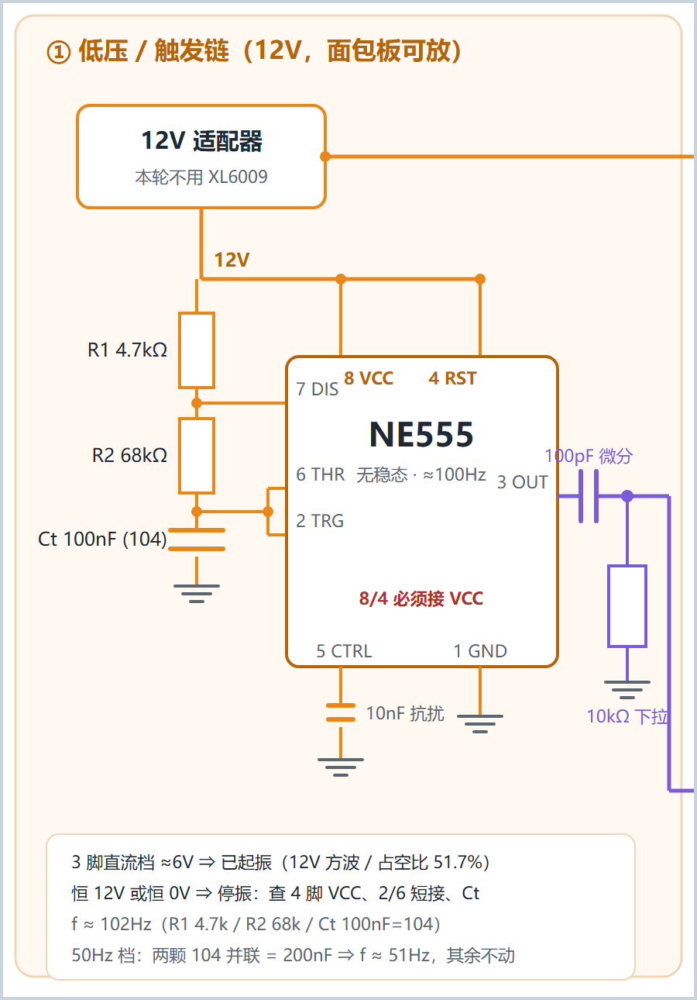
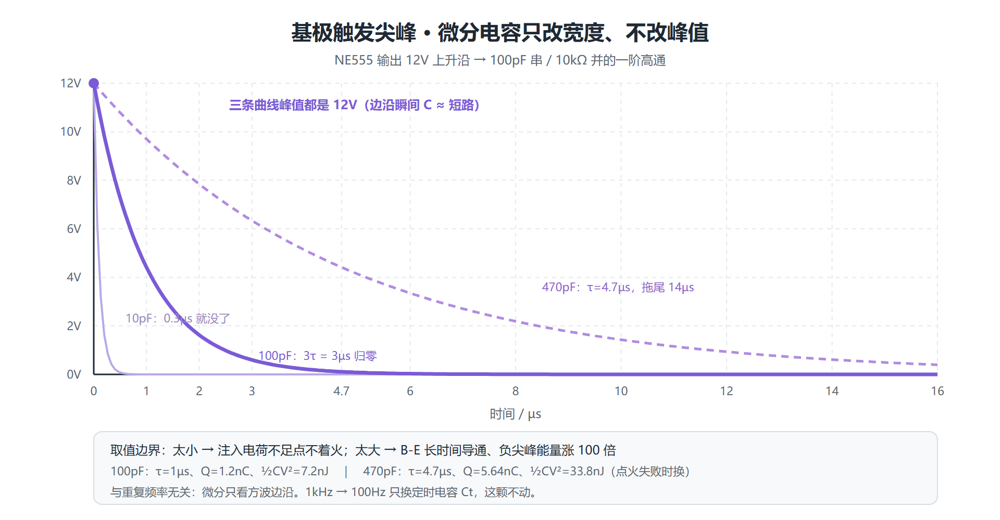
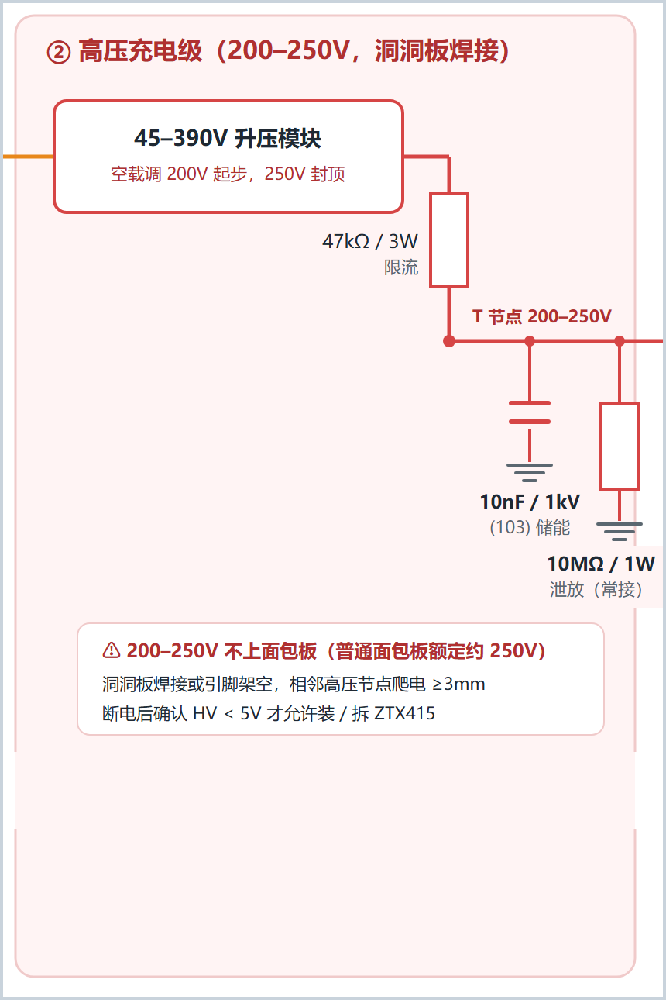
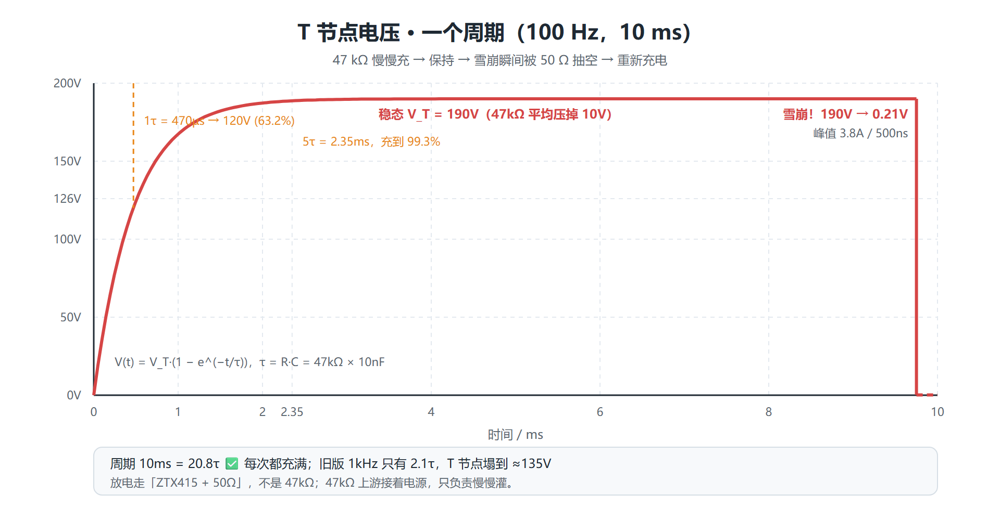
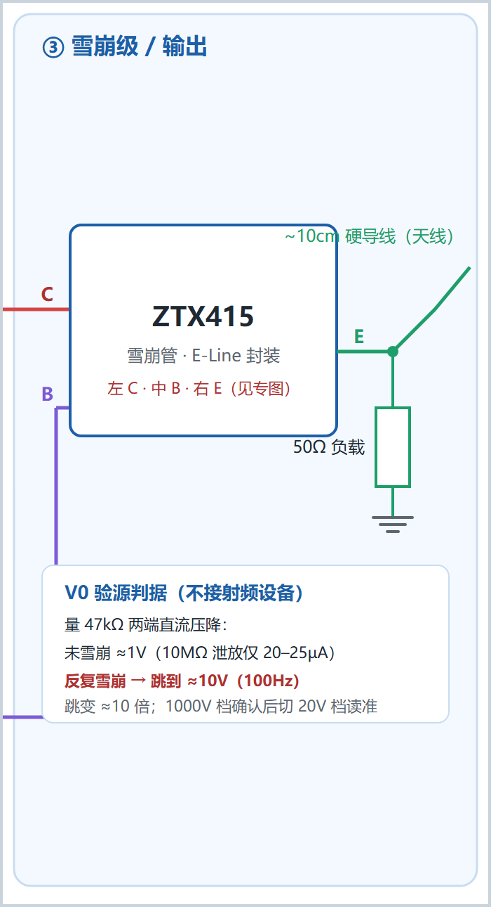

电路图逐块图文讲解
主图一张看全，但新手容易「盯着一整张图不知道从哪根线开始」。这篇把整机图拆成三块，每块一张局部图，逐根线讲：从哪来、到哪去、为什么这么接、参数怎么算、实物怎么焊、接错会怎样。 参数公式在
04-元件参数计算手册.md，动手判据在01-上电验收卡.md。
0. 先看总图，建立全局印象

网页版可无损缩放 · ZTX415 雪崩级特写 · 脚位专图


读图四条规则
| 规则 | 说明 |
|---|---|
| 颜色 | 红 = 200 V 高压 · 橙 = 12 V 低压 · 紫 = 触发 · 绿 = 雪崩输出 · 灰 = GND |
| 实心圆点 = 相连 | 没圆点的交叉不相连。主图做了零交叉设计，实际不用担心这条 |
| 接地符号 | 图上散落的 ⏚ 不是各自独立，实物必须星形汇到一点：12 V 适配器负极 |
| 三个虚线框 | ①②③ 是物理分区，不只是画着好看：① 可插面包板，②③ 必须洞洞板焊接 |
整条链路一句话
12V ─┬─→ NE555(100Hz 方波) ──100pF 微分──→ ZTX415 的 B ←「什么时候发」
└─→ 升压模块(200V) ─47kΩ─→ T 节点 ─→ ZTX415 的 C ←「能量从哪来」
│
10nF 储能 + 10MΩ 泄放
│
ZTX415 的 E ─50Ω─→ GND ＋ 10cm 天线 ←「往哪发」
三区之间有 4 根跨区线，局部图里它们会被切断，先记住去向：
| # | 颜色 | 从 | 到 | 传什么 |
|---|---|---|---|---|
| ① | 橙 | ① 区 12 V 适配器 | ② 区升压模块 VIN | 12 V 供电 |
| ② | 红 | ② 区 T 节点 | ③ 区 ZTX415 C | 190 V 高压 |
| ③ | 紫 | ① 区 NE555 3 脚（经 100 pF） | ③ 区 ZTX415 B | 12 V、1 µs 点火尖峰 |
| ④ | 灰 | 全部 ⏚ | 适配器负极 | 公共地 |
局部图是从总图按坐标裁剪出来的，接线与主图 100% 一致（生成脚本
tools/make_figures.py不改任何连线）。所以图边缘出现的「断头线」不是画错，是这根线去了另一个分区——照上表接过去即可。
1. 模块 ① · 低压 / 触发链（12 V，可插面包板）

1.1 这块在干什么
把 12 V 直流变成每 9.75 ms 一个的 12 V 方波，再把方波的上升沿削成 1 µs 的窄尖峰送给雪崩管基极。它只负责「什么时候发」，不提供任何发射能量。
1.2 逐根线讲
| 图上元素 | 从 → 到 | 为什么 |
|---|---|---|
| 12 V 适配器框 | 出两路：一路去 ② 区升压模块，一路留在本区 | 本轮直供，XL6009 不接 |
| 橙色 12 V 母线 | 接 R1 上端、NE555 的 8 VCC / 4 RST | 4 脚悬空必停振，是新手第一大坑 |
| R1 4.7 kΩ → R2 68 kΩ → Ct 104 | 串联到 GND，构成定时链 | 三个值一起决定 100 Hz |
| 7 DIS | 接 R1/R2 中点 | 放电管在 Ct 放到 1/3 VCC 时导通 |
| 2 TRG + 6 THR 短接 | 接 R2/Ct 中点 | 两脚必须短接，漏了就停振；这个中点是最容易插错的 |
| 5 CTRL | 10 nF 到 GND（可省） | 内部 3×5 kΩ 分压点，加了抗高频干扰 |
| 1 GND | 公共地 | |
| 3 OUT | → 100 pF → B 节点 | 方波出口 |
| 100 pF 串 + 10 kΩ 下拉 | 一阶高通微分器 | 把 12 V 方波削成 1 µs 尖峰 |
| 紫色低位走线 | 绕到图底再向右出图 | 刻意绕开高压区，实物也别和 200 V 线平行贴着走 |
1.3 关键参数（详见 04 手册第 3、4 节）
| 量 | 值 | 图上怎么验 |
|---|---|---|
| 占空比 | 51.7% | — |
| 3 脚直流档 | ≈6.20 V | Step 1 判据：读到 6 V 就是起振了 |
| 触发尖峰 τ | 10 kΩ × 100 pF = 1 µs | 万用表量不到（占空比 0.03%），别误判没信号 |
| 注入电荷 | 100 pF × 12 V = 1.2 nC | 点不着火时换 470 pF，电荷涨到 5.64 nC |

看图要点：三条曲线峰值都是 12 V，只有尾巴长度不同——这就是为什么「下拉电阻会不会把尖峰拉低」是个伪问题。电容只改宽度，不改峰值。100 pF 是经验起点，470 pF 是点火失败时的加强档，10 pF 太窄点不着火。
1.4 实物与错接
| 项 | 做法 |
|---|---|
| 放哪 | 面包板即可，全是 12 V 侧 |
| Ct 丝印 | 必须是 104（100 nF）；拿成 103 会跑回 ≈1 kHz，充电来不及 |
| R1/R2 别颠倒 | 4.7 k 在上、68 k 在下；颠倒占空比会极端化 |
| 4 脚忘接 VCC | 3 脚恒 0 V，停振 |
| 2/6 忘短接 | 3 脚恒 12 V 或恒 0 V，停振 |
| 10 kΩ 画成串联 | 必须从基极节点下拉到 GND，串在 100 pF 与基极之间会让基极悬空、随机自触发 |
图边缘两根断头线：右上橙线 → ② 区升压模块 VIN；右侧紫线 → ③ 区 ZTX415 的 B。
2. 模块 ② · 高压充电级（200–250 V，洞洞板焊接）

2.1 这块在干什么
把 200 V 高压掐成 4.3 mA 的细流，慢慢给 10 nF 充满，等 ③ 区一声令下把电放掉。它是「弹药库 + 限速器」，本身不产生脉冲。
2.2 逐根线讲
| 图上元素 | 从 → 到 | 为什么 |
|---|---|---|
| 45–390 V 升压模块 | 12 V 输入 → 200 V 输出 | 空载先调到 200 V，250 V 封顶 |
| 47 kΩ / 3 W | 模块 HV+ → T 节点 | 限流充电 + 淬灭（后详） |
| T 节点 | 三条支路汇合点，也是验源测量点 | 稳态 ≈190 V |
| 10 nF / 1 kV (103) | T 节点 → GND | 储能：雪崩瞬间要 3.8 A，47 kΩ 只给得出 4.3 mA |
| 10 MΩ / 1 W | T 节点 → GND，全程常接 | 断电后 0.5 s 放净残压，安全件 |
| 右侧红线 | T 节点 → ③ 区 C | 把 190 V 送到雪崩管集电极 |
2.3 三条通路，别再混
这是整台设备最容易记串的地方：
| 阶段 | 电流走哪 | 量级 | T 节点 |
|---|---|---|---|
| 充电 | 200 V → 47 kΩ → 10 nF → GND | 4.3 mA 递减到 20 µA | 0 → 190 V |
| 脉冲放电 | 10 nF → ③ 区 ZTX415 → 50 Ω → GND | 峰值 3.8 A | 190 V → 0.21 V |
| 雪崩末期 | 200 V → 47 kΩ → ZTX415 → 50 Ω → GND | 仅 4.3 mA | < 维持电流 → 关断 |
| 断电残压 | 10 nF → 10 MΩ → GND | 20 µA，τ=0.1 s | 190 V → < 5 V |
47 kΩ 上游接着电源，它不泄放、也不放电。它的作用是把「硬电压源」变成「软电流源」：雪崩导通时
V_T = 200 \times 50/(47\,000+50) \approx 0.21\ \text{V}，电源还挂着，但补给只有 4.3 mA，远低于维持电流
I_H（几十 mA），管子于是自动关断。术语叫限流淬灭。

看图要点：指数充电 2.35 ms 到 99.3%（5τ），然后稳在 190 V 等到 9.75 ms，雪崩瞬间垂直掉到 0.21 V。周期 10 ms = 20.8τ，所以每次都充满；旧版 1 kHz 只有 2.1τ，T 节点塌到 ≈135 V——这是把频率降下来的真正原因。
2.4 参数与选型（详见 04 手册第 2、6 节）
| 量 | 公式 | 值 |
|---|---|---|
| 充电 τ | 47 kΩ × 10 nF | 470 µs |
| 充满 5τ | 5 × 470 µs | 2.35 ms |
| 单脉冲能量 | ½ × 10 nF × 190² | 0.18 mJ |
| 放电 τ | 50 Ω × 10 nF | 500 ns |
| 验源判据 | 47 kΩ 压降 | 静态 0.94 V → 雪崩 10.05 V |
储能位三个硬要求：容值 10 nF（丝印 103）、耐压 ≥630 V 推荐 1 kV、材质 C0G/NP0 首选。X7R 在 200 V 直流偏压下容量会掉 20~40%，Y5V/Z5U 掉 80%；普通 50 V 瓷片焊上去会直接击穿。绝不能把定时位的 104 换过来——τ 变 4.7 ms，100 Hz 只有 2.1τ，脉冲反而更弱。
47 kΩ / 3W 里的「3 W」是耐压需求，不是功率需求：正常工作只有 2 mW，最坏（T 节点短路）0.85 W；但 1/4 W 色环电阻额定工作电压只有 200~250 V，搭在 190 V 上长期会漂移爬电。手上全是 1/4 W 时，用 4×12 kΩ 串联、2×5.1 MΩ 串联，零采购解决。
2.5 实物与安全
| 项 | 做法 |
|---|---|
| 放哪 | 洞洞板焊接或引脚架空，普通面包板额定约 250 V、爬电不够 |
| 间距 | 相邻高压节点 ≥3 mm，高低压区物理隔开 ≥10 mm |
| 所有裸露点 | 套热缩管 |
| 断电后 | 万用表确认 HV < 5 V 才允许装 / 拆 ZTX415；模块内部 µF 级电容要等 ≥60 s |
| 表笔 | 黑 → COM、红 → VΩ；红表笔插 A 孔量 200 V 等于直接短路 |
| 禁止 | 用螺丝刀 / 镊子短路放电 |
图边缘两根断头线：左侧橙线 ← ① 区 12 V；右侧红线 → ③ 区 ZTX415 的 C。
3. 模块 ③ · 雪崩级 / 输出

3.1 这块在干什么
ZTX415 平时截止；基极收到 ① 区的 1 µs 尖峰后雪崩导通，把 ② 区存好的 10 nF 在几十 ns 内经 50 Ω 放空，形成亚 ns 前沿的宽带脉冲，由 10 cm 导线辐射出去。
3.2 三个引脚各接什么
| 脚 | 线色 | 来自 | 说明 |
|---|---|---|---|
| C（左，1 脚） | 红 | ② 区 T 节点 | 190 V 高压输入端 |
| B（中，2 脚） | 紫 | ① 区 100 pF 微分 + 10 kΩ 下拉 | 点火端，只认边沿 |
| E（右，3 脚） | 绿 | 50 Ω → GND，同一点分出 10 cm 天线 | 放电回路 + 辐射 |
⚠️ ZTX415 是 E-Line 封装，印字面朝自己、引脚朝下：左 C · 中 B · 右 E。常见 TO-92 多是 E-B-C，正好相反。依据：立创 C5245685 引脚图
C1B2E3、Diodes datasheet 封装图C B E。散装货一律实测：万用表二极管档，红表笔固定一脚、黑表笔碰另两脚，两次都读 0.60–0.70 V 的就是 B，且应在中间。C/B/E 焊反是「点不着火」的头号原因。
3.3 关断是「与」条件
| 端口 | 谁负责 | 条件 |
|---|---|---|
| 基极侧 | 10 kΩ 下拉（① 区） | 撤掉点火尖峰，τ=1 µs 把节点放回 0 V |
| 集电极侧 | 47 kΩ 限流（② 区） | 10 nF 放空后补给只剩 4.3 mA < |
，防自持 |
只撤基极而让高压直连 T 节点 → 持续电弧烧管；只有限流而基极悬空 → 随机自触发。10 MΩ 不参与脉冲关断（τ=0.1 s，比 ns 级慢 6 个数量级），它只在断电后工作。
3.4 输出与验源
50 Ω 是惯用阻抗，把峰值电流定在 ≈3.8 A；10 cm 硬导线是临时天线，够 V0 用。
图右下的白框是零射频验源判据——不买任何接收设备，只量 ② 区 47 kΩ 两端直流压降：
| 读数 | 结论 |
|---|---|
| ≈1 V，NE555 开关都一样 | 没点着火：脚位 / 触发 / 电压 |
| 从 ≈1 V 跳到 ≈10 V | 雪崩在反复放电 ✅ 本级通过 |
| NE555 关着就很大 | 自激，电压过高 |
两表笔共模都在 ≈190 V、彼此差压只有 1~10 V，所以先用 DCV 1000 V 档确认差压 < 20 V，再切 DCV 20 V 档读准。完整推导见 04 手册第 8 节。
图边缘两根断头线：左侧红线 ← ② 区 T 节点（C）；左侧紫线 ← ① 区 100 pF 微分输出（B），它在低位绕行后从这里竖上来。
4. 按图施工：四步各点亮哪一块
| Step | 图上涉及 | 通电范围 | 过关判据 |
|---|---|---|---|
| 1 | 只有 ① 区（NE555 + R1/R2/Ct） | 12 V，② 区升压模块不接 12 V | 适配器 12.0 V、4 脚 12.0 V、3 脚直流 ≈6 V |
| 2 | ② 区升压模块（输出悬空） | 只模块 | 空载调到 200 V，记下电位器位置 |
| 3 | ② 区 47 kΩ + 10 nF + 10 MΩ（仍不装管子） | ② 区 | 10 nF 上端 ≈200 V；断电后电压缓慢归零（证明泄放接上了） |
| 4 | 全图（装 ZTX415） | 全部 | 47 kΩ 压降从 1 V 跳到 ≈10 V |
③ 区在 Step 1–3 全程保持空着，先不要插 ZTX415。这样前三次上电时，即使接错也不会烧管。
5. 看图最容易误读的 6 处
| 误读 | 实际 |
|---|---|
| 「交叉的线应该相连吧」 | 主图零交叉；有实心圆点才相连 |
| 「⏚ 符号各自接地就行」 | 必须星形汇到适配器负极一个点，别拿面包板长条地轨当高压脉冲回路 |
| 「C/B/E 按 TO-92 习惯插」 | ZTX415 是 C-B-E，与常见 E-B-C 相反 |
| 「47 kΩ 是放电电阻」 | 它上游接着电源，只限流；放电走 ZTX415+50 Ω，泄放走 10 MΩ |
| 「10 nF 和 10 MΩ 是一对，都在放电」 | 10 nF 存能量，10 MΩ 只在断电后放净残压 |
| 「局部图边缘的断头线是画漏了」 | 是跨区线，按第 0 节那张 4 行表接过去 |
6. 图文件与重新生成
| 文件 | 用途 |
|---|---|
雪崩源_完整接线图_100Hz.png / .svg / _预览.html |
整机主图，照着焊 |
模块1_低压触发链.png / .svg |
本文第 1 节配图 |
模块2_高压充电级.png / .svg |
本文第 2 节配图 |
模块3_雪崩输出级.png / .svg |
本文第 3 节配图 |
参数曲线_充电与放电.png / .svg |
T 节点波形，讲 τ 与淬灭 |
参数曲线_微分尖峰.png / .svg |
三档微分电容对比 |
ZTX415_雪崩级接线图_单张版.png |
雪崩级特写 |
ZTX415_引脚与接线专图.png |
脚位 + 万用表验脚 + 参数表 |
改了总图或参数后，一键重生成全部局部图和曲线：
cd D:/workbuddy/docs/pd
python tools/make_figures.py --png # 生成 3 张分区图 + 2 张曲线，并渲染 PNG
python tools/calc_params.py --compare # 核对曲线用到的数值
make_figures.py 的裁剪只改 viewBox，不改总图任何一根线；曲线图按 calc_params.py 的同一套公式画，所以图和文字不会各说各话。
今天只做 Step 1：高压模块别接 12 V，只插 ① 区 NE555，量适配器 12.0 V、4 脚 12.0 V、3 脚直流档 ≈6 V，三个数报回来再往下走。